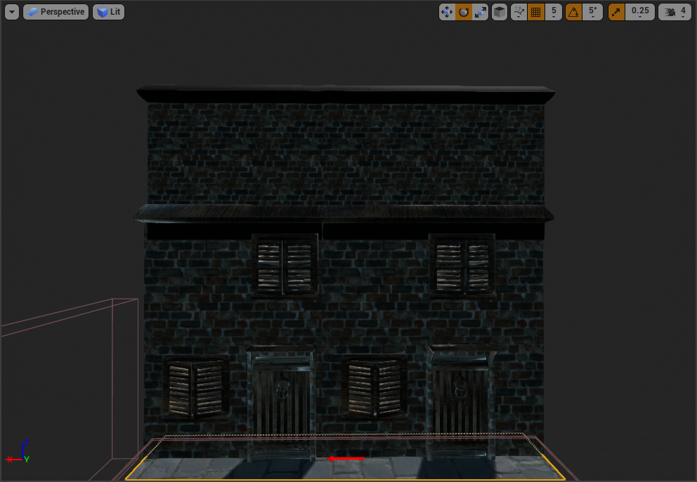
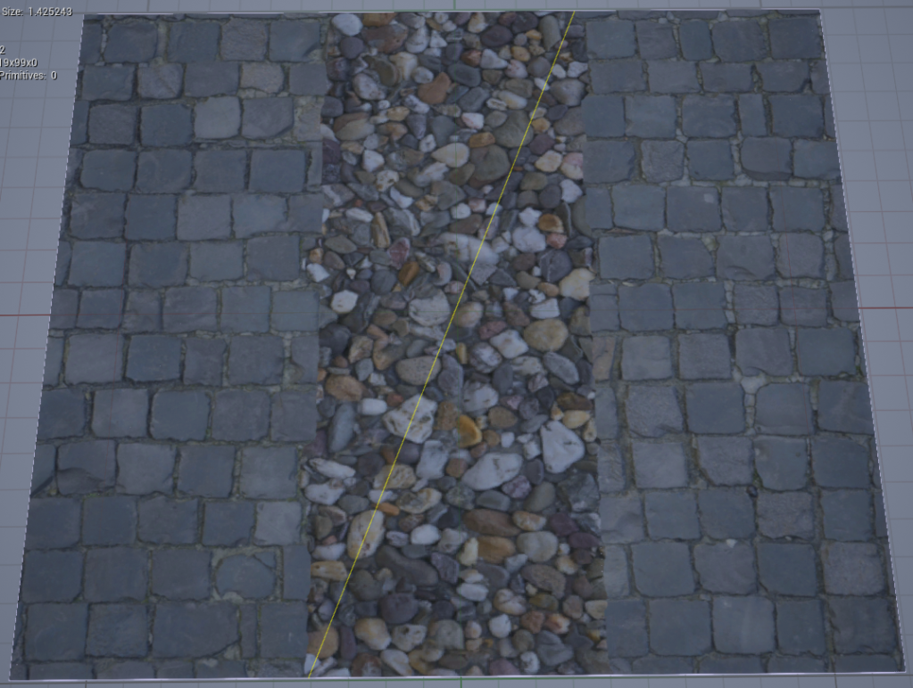
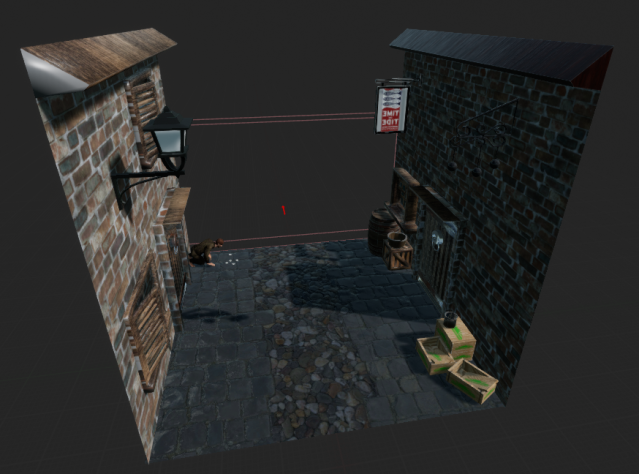

This is a project I worked on as part of my college course. For this project we had to follow a brief from a client which in this case was the Time and Tide museum. We were tasked with making a game about one of the exhibits to get people more interested in checking them out.
This infinite runner game is based on the 'rows' exhibit at the Time and Tide museum.
At the end of our first week of work we have made some good progress. My team consists of Dylan (3D modeler / 2D Artist), Tyler (3D modeler), Cameron (project manager / sound tech) and I. We started by creating a Game Design Document, along with a document detailing our ideas, end goals and mock ups to send to the Time and Tide museum.
Since I am the only programmer, I started by creating some mock up code by following a tutorial series made by Unreal on YouTube.
At the end of this tutorial series I began to customise it to fit our plans for the final product. This includes adding a main menu and high score screen. I also had people form my class play test the game so that I can fine tune the controls.
I also added a mechanic where the player speeds up over time, to increase difficulty as time goes on which adds challenge to the game and makes it more enjoyable and fun to play.
Another thing we did this week was actually go to the Time and Tide museum to check out the exhibits, get reference images and ask questions to make sure we are making something well suited to the museum and that will be seen favorably.
Due to the current circumstances we have to start working at home, what this meant for our project was that I had to restart because all my work was at college. Luckily this wasn't too hard as since I coded it before, I can code it again. So I spent the first week after Christmas finishing the tutorial series again.
After completing the tutorial series and catching up to roughly where I got in my last post / before the Christmas holiday I began to make improvements, and add code. I also set up source control so that my teammates can place their 3D assets in without the hassle of uploading them to OneDrive and alerting me to download them.
The first thing I did was make it so obstacles cant spawn as soon as you start, this is to make the game more fair and a more enjoyable experience. I did this by creating a new child floor component that is empty and adding to the spawn logic that tiles with obstacles cant spawn until 3 empty tiles have spawned in.
The next thing I did was make it so that when you reach a corner you slow down to give you time to think before turning. I decided to add this after playing a trial run and realising that when I reached the really high speed the character doesn't always turn in time, and when the character does there might be a rock right in front of you. So I added a collision block in the corner tiles that sets the character speed to a lower number.
I am currently in the middle of updating the high score screen, this is to not only make the code more efficient and therefore make the game run faster, but also add to the amount of high scores it shows.
My plans for after I have updated the high score menu is to update all the graphics in the game by replacing most of what I have with the 3D models made by my team mates, to make the game historically accurate and fit our theme. One of my team mates also designed a HUD for the main menu which fits the theme and is a really cool idea so I look forward to implementing that.
The next time I post an update it should be after I have concluded our graphics overhaul. At this point we have a clear direction for our project and are working hard and fast towards that goal. There are a few details we haven't figured out, however I think we have a solid outline for our game and a well made prototype.
Some notes to add about the development so far is actually the problems that have arisen from using source control which was inevitable since it is my first time setting it up and nobody in the class is well versed in it. In an earlier post I roughly detailed how I set up the source control and it worked fine, however I have encountered some minor issues down the line to do with merging. This is something I've been working through and for the most part I have been able to fix all the issues that came up. The only issue I could not fix is one where one of my team mates is unable to clone the repository, because of this he is the only one who is not collaborating on GitHub as of this moment.
At the end of this week of programming I have managed to do what I set out to do in my last post. I have concluded the graphics overhaul of the obstacles and coins, as well as finished the high score screen.
In the beginning we had considered creating a list of high scores, so a top 10. however, this fell through as I was having difficulties and we also reconsidered how good that would actually be in the long term. So we changed it so that there is only one high score shown. Unless the museum decides it wants the top 10 or we change our minds it is likely to stay that way. with that the high score screen was completed.
I also updated the obstacles so that their is more variety, however I am still waiting on some assets from the modelers and because of this I'm having to use makeshift ones. I have a similar problem with the player model and the buildings on either side. Once those assets have been delivered I can put them in and the game will be near completion.
Along with doing those things I also messaged a friend who does music technology in the college to make the music for the game. I know from the experience of working with him before that he makes good music and I'm hoping with the extra time we have since this isn't a games jam will mean he can make the best music I've heard from him yet.
This is everything I've done this week. Hopefully by the end of next week in addition to the obstacles I already have we also have obstacles you can jump over and slide under. In the case I do get that done by the end of next week it means I've completed everything I need to do in terms of obstacles and will be able to move onto the finer details of character movement and animations as well as making the game look the way our team envisioned.
As for the other members of the group the 2 modelers are creating the assets I mentioned above and our team leader / producer who did the paperwork is on HUD design as he came up with a really good idea and it keeps all the members of our team busy. After finishing with the HUD design which shouldn't take long because he already had a solid idea that everyone in the team liked he will be sourcing free to use sound effects.
This is everything that happened this week, truth be told its hard to find the motivation and the energy to do work with the current situation but somehow we are still working to make this project a success.
Originally the plan for this week was to create obstacles you can slide / jump over, however this has not happened. The reason for this is I have not yet got the models for the obstacles and although I could have substituted some BSP, I was sent models for other things instead, so I opted to put those in and hopefully make the game look better / more realistic.
The models I was sent included the Wall Panels that will act as the buildings on either side of the player, some crates, a bucket and the player / NPC models. So far I have updated the cart to have barrels, crates and a bucket inside.
I also added the wall panels I mentioned, so far I only added the one to make sure everything lines up, but in the future there will be more diversity within the look of our game.
Lastly I updated the texture on the floor and the post processing, so that there is a thinner line around objects and the floor looks more time period accurate, although not perfect.
At this point I'm still waiting for some models, however since I did not get it done this week the goal for next week is adding more diversity in obstacles instead of having to avoid, it would be nice to have slide mechanics and jump where possible.
The primary demographic for our Time and Tide runner game as stated in our Games Design Document is Young Children - Teenagers, or 10-16 year olds. The reason we chose this as our primary demographic is because a lot of the people who play games that will be visiting museums come from school trips and these school trips / outings with parents often happen between the ages of 10 and 16. Our secondary demographic is everyone else who might visit the time and tide museum which is usually adults ranging from 30-50, these people are less likely to be avid consumers of video games, but might still try it, if its there.
The way it hits the target demographic is by being a genre of game often enjoyed by people of these ages, with games like 'Subway Surfers' and 'Temple Run' being some of the most popular runner games among the target demographic. The mechanics are also quite simple and responsive, which means that there wont be any issues regarding movement. The way the character is controlled is also fairly unique and entertaining, especially for younger audiences, since it is controlled like an arcade game. In our initial design we also tried to make it quite immersive, so they can really put themselves in the world / era of the game. Apart from that we have tried to keep the game realistic, apart from some post processing which was added to make seeing the objects easier and add some pop to the game. Most importantly the game is supposed to be educational, we aren't reaching that mark yet. but we are developing assets towards this goal and hopefully soon we will be able to say that it hits that mark.
Our design philosophy is to create a game that realistically portrays 1800's Yarmouth. we started by basing our environment off of this time period. This should immerse the players into this period of history, in hopes that they will take more interest into this topic. Our characters and buildings are designed to fit this period to further reinforce the immersion. When designing the mechanics for this game we kept in mind what keeps people coming back. This is why we decided to include a slight level of difficulty because challenges make people want to keep trying till they succeed. This is also why we have the score system.
we want the players to play this game and be excited, we want them to have fun and we want them to play again. I also want it to develop their passion to learn, both about the museum and history. This game should be able to bring people back into the museum time and time again. This game should be a lasting memory of a good time from their time in school / the museum.
A lot of the design choices we made were in accordance with the brief presented to us by the museum. Originally our game included stair sections which go up and down, however we made a creative choice to remove them, the reason is that historically the rows didn't have many stair sections that change the elevation, instead we are opting for small alley sections that appear every so often, this makes it much more realistic. We have also considered making the rows in our game a bit thinner for the same reason, realism. The reason we are going for a DDR style control scheme is both to make the game more fun / appealing for younger audiences but also add to that immersion that a keyboard + mouse / controller cant give you. There is also the point that the time and tide would prefer this method as its less likely to spread Covid-19.
Its been 2 weeks since my last post and the project has changed quite a lot. Our team has made a lot of progress in the last 2 weeks, including changing the look of the level / floor tiles and the design of the HUD elements. We have also discussed changing the player character in the game.
To start with we decided that having all the wall panels the same height made the game bland and is also unrealistic, so we added different sizes of wall panels as well as different colours and some have different amounts of windows, some don't have anything, etc. this instantly added to the aesthetic of the game and our team decided to stick with it.
as for the HUD, the main design was created by our producer / researcher Cameron, after he laid out the main design, I had some inspiration and decided to add some animation, just for the added wow factor for the players.
Lastly we had a conversation with our teacher and as a team about maybe changing the main character to a police officer and he is picking up the coins that the robber drops while he runs away. the pros for this idea is it makes more sense than the robber finding random coins on the ground, however since the police officer wont catch the robber it sends a bad message that criminals can escape which isn't great for when children play.
This week I have focused all my efforts on decorating the floor tiles to make them look nice and a bit more realistic / cluttered like the Rows would be. Here are the images:
I also have some sound effects to put in, and I will be continuing with this for the next week.
In the time since the last post our group has been working hard to finish the game. We started by adding extra ambiance and cluttering some of the floor tiles, to add character to the game. we then messed around with the sky box and lighting to make the level seem a bit �warmer'. after that we worked to iron everything out.
The only thing we were missing after ironing everything our was music / sound effects, then get people to test and point out any improvements / bugs. To start with I asked my friend to make 2 tracks of music, one for the main menu and one for the actual game-play. Our group then listened to both of them and asked for third party opinions and came to the conclusion that the music needed to be tweaked a bit. So, to start with I gathered some Copyright free sounds / sound effects / music. I then went into Adobe Audition and messed around with the tracks a bit and ended up with two tracks which our group liked and we went with.
Now that the game was in what we considered a complete form we began to get play testers to find bugs and suggest improvements. we started by getting the people in our class to play the game, and a few bugs were pointed out which were quickly fixed. We also got a few family members who were kids to play the game. The feedback from this was good as they enjoyed the game but there was a learning curve. This is the finished product: